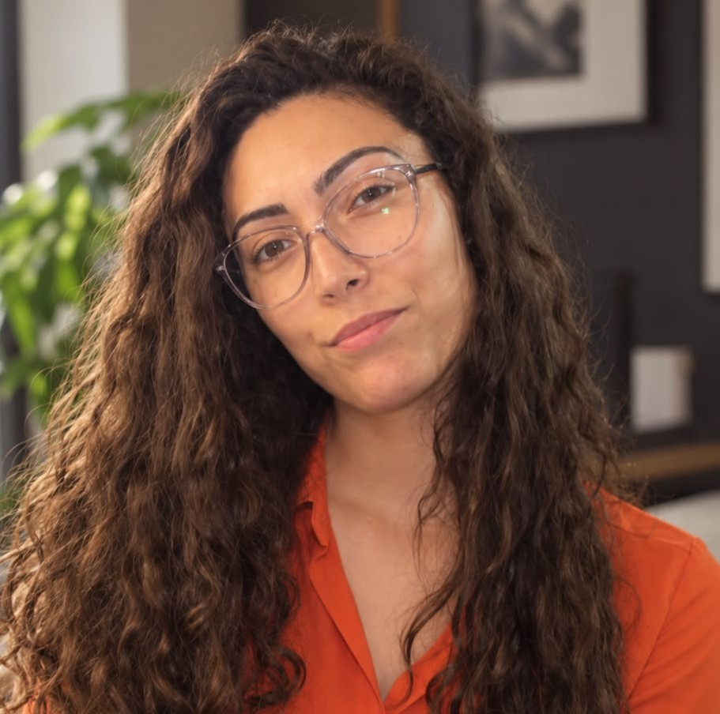
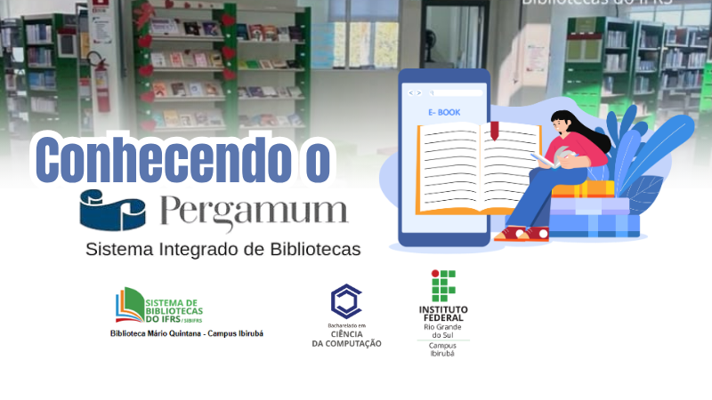
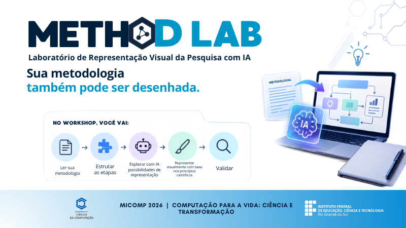
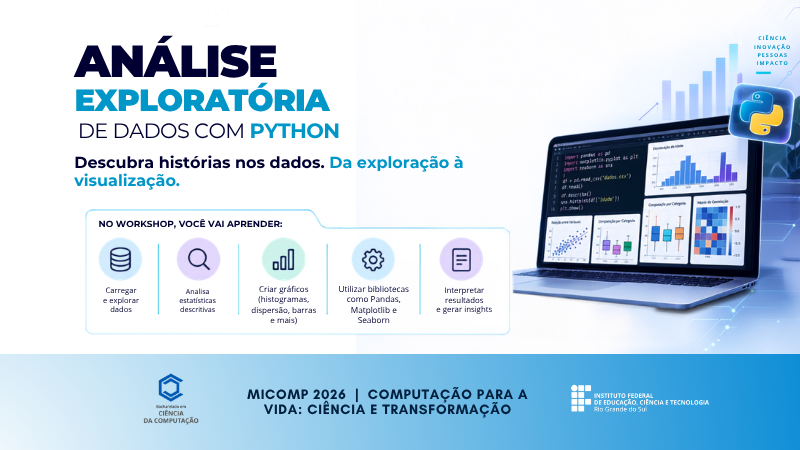

Claudiany Calaça
Prof. de Informática e Responsável pelo projeto

A edição de 2026 da MICOMP propõe uma reflexão sobre o papel da Computação na transformação da vida e da sociedade, aproximando a iniciação científica dos desafios, necessidades e possibilidades presentes no cotidiano. A edição busca incentivar os estudantes a compreenderem a Computação não apenas como desenvolvimento tecnológico, mas como um campo científico capaz de investigar problemas, produzir conhecimento e desenvolver soluções com impacto em diferentes contextos. Nesse sentido, os trabalhos podem explorar diferentes áreas da Computação, incluindo Inteligência Artificial, desenvolvimento de software, Interação Humano-Computador, Internet das Coisas, segurança, acessibilidade, tecnologias assistivas, sustentabilidade, educação, saúde, ciência de dados e outras aplicações. Mais do que apresentar tecnologias, a MICOMP 2026 busca estimular a investigação científica e a reflexão sobre como a Computação pode contribuir para transformar realidades e melhorar a vida das pessoas.
O tema da MICOMP 2026, “COMPUTAÇÃO para a VIDA: Ciência e Transformação”, coloca a ciência e as pessoas no centro da discussão sobre tecnologia. A temática convida os estudantes a investigar problemas reais e refletir sobre as relações entre ciência, tecnologia e sociedade, explorando como a Computação pode gerar inovação, apoiar pessoas e comunidades e contribuir para uma sociedade mais inclusiva, sustentável e conectada.
Coordenador e Bolsistas voluntários que contribuem com a organização e realização da MICOMP 2026.
Prof. de Informática e Responsável pelo projeto

Apoio, Comunicação e Divulgação
Apoio, Comunicação e Divulgação
Organização e Logística
Organização e Logística
Bibliotecária Monique Isoton.
Prof. Claudiany Sousa
⚠️ Exclusivo para alunos de C. da Computação matriculados em Metodologia Científica. Verifique a disponibilidade de vagas!
João Pedro O. Schefler
A primeira versão do artigo deverá ser enviada no moodle para correção e devolutiva do professor.
ATENÇÃO! A submissão é restrita aos alunos de Computação matriculados em Metodologia Científica. Antes de submeter, consulte o professor responsável.
Data oficial da Mostra de Iniciação Científica em Computação (Data sujeita à alterações).
1º semestre de 2027.
Os trabalhos deverão ser escritos em português ou inglês, seguindo o modelo de artigos da SBC OpenLib e as orientações apresentadas na disciplina.
Template oficial: Acessar modelo da SBC
Quando houver utilização de IA generativa, deverão ser informadas as ferramentas utilizadas e as partes do trabalho em que foram empregadas. A declaração deverá constar na seção “Declaração sobre uso de Inteligência Artificial”, ao final do artigo.
InformaçõesA MICOMP constitui um espaço de iniciação científica, divulgação e socialização dos trabalhos desenvolvidos pelos estudantes na área da Computação. O evento busca estimular a aplicação do método científico, a escrita acadêmica, a comunicação científica e a reflexão ética sobre o desenvolvimento e o uso das tecnologias.
Os trabalhos deverão ser apresentados durante a programação da MICOMP. As apresentações têm como objetivo proporcionar aos estudantes a experiência de comunicação e divulgação científica, estimulando a capacidade de síntese, argumentação e apresentação oral. Os estudantes poderão utilizar recursos digitais e audiovisuais para apoiar a apresentação, como postêrs, demonstrações de sistemas, protótipos, vídeos, imagens e outros recursos relacionados ao trabalho desenvolvido. O formato e o tempo das apresentações serão divulgados pela Comissão Organizadora.


21/09 às 19h - Lab II.
Inscreva-se